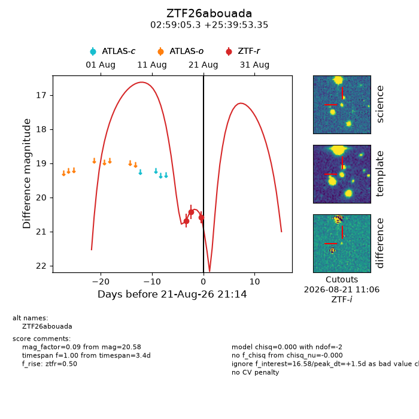
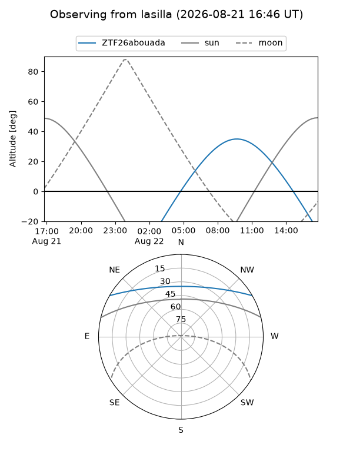
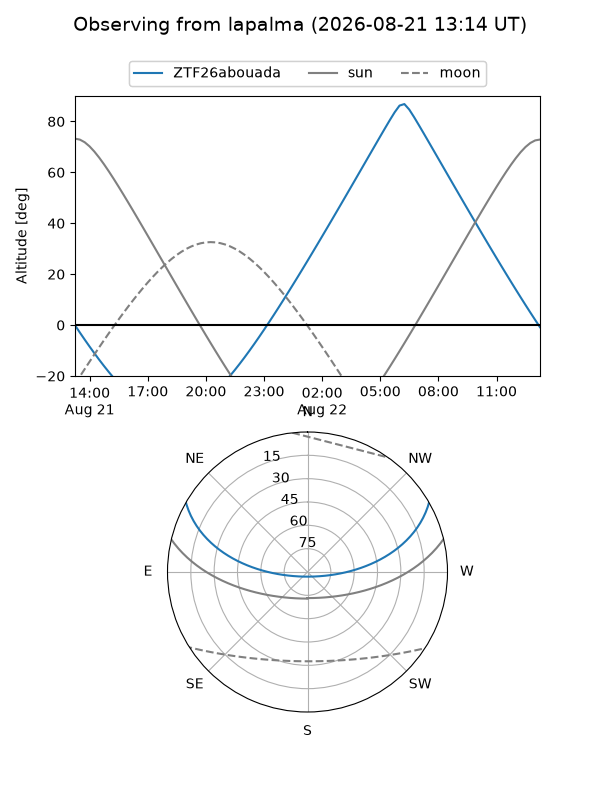
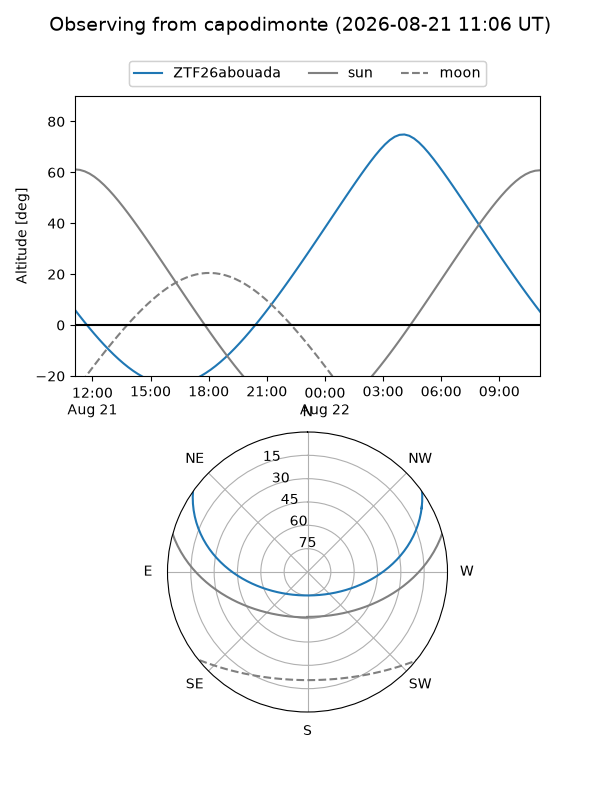
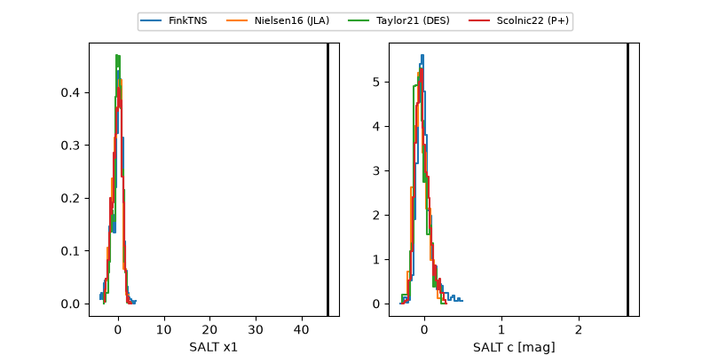

ZTF26abouada
Target ZTF26abouada at 2026-08-21 21:17
Aliases and brokers:
FINK-ZTF: ztf.fink-portal.org/ZTF26abouada
Lasair-ZTF: lasair-ztf.lsst.ac.uk/objects/ZTF26abouada
ALeRCE-ZTF: alerce.online/object/ZTF26abouada
Direct TNS query: direct search
alt names
ZTF26abouada (ztf,fink_ztf)
Coordinates:
equatorial (ra, dec) = 44.7720,+25.66482
equatorial (HMS+DMS) = 02:59:05.27,+25:39:53.35
galactic (l, b) = (155.9092,-28.91100)
Flags:
peak dt: +1.5
Photometry:
last ztfr=20.58
3 ztfr detections
Lightcurve

Visibility



Additional plots
